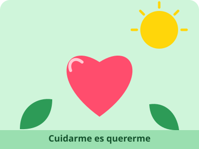

🏠 Inicio | 💚 Autocuidado | 🛡️ Prevención | 🌈 Derechos | 📚 Fuentes confiables
💚 Autocuidado: cuidarme es quererme

¿Qué es el autocuidado?
Es el conjunto de acciones que hacemos por decisión propia para cuidar nuestro cuerpo, nuestras emociones y nuestras relaciones. No es egoísmo: cuidarte te ayuda a estudiar mejor, convivir mejor y cumplir tus metas.
Ejemplo: decir «debemos cuidarnos» no es suficiente. Cuidarse puede significar dormir lo necesario, comer variado, moverse todos los días, lavarse las manos, hablar con alguien de confianza cuando algo nos preocupa y pedir ayuda a tiempo.
1. Cuidado del cuerpo
- Actividad física: la OMS recomienda que las personas de 5 a 17 años hagan al menos 60 minutos diarios de actividad física de intensidad moderada a vigorosa (caminar rápido, bailar, correr, jugar fútbol).
- Alimentación: comer frutas, verduras, granos y proteínas, tomar agua y no abusar de las gaseosas ni de la comida ultraprocesada.
- Descanso: en la adolescencia el cuerpo necesita dormir bien; evita usar el celular hasta muy tarde.
- Higiene y controles: lavarse las manos y los dientes, bañarse y acudir al centro de salud para los controles y las vacunas.
2. Cuidado de las emociones
La OMS estima que alrededor de 1 de cada 7 adolescentes de 10 a 19 años vive algún problema de salud mental, y que muchos de estos problemas pasan sin ser reconocidos ni tratados. Por eso es importante hablar de cómo nos sentimos.
- Cuenta lo que sientes a una persona de confianza: familia, un docente o el DECE (Departamento de Consejería Estudiantil) de tu colegio.
- Haz actividades que disfrutas: deporte, música, dibujo, leer, pasar tiempo con amigos.
- Descansa de las pantallas y de las redes sociales.
- Pedir ayuda es de valientes. Si sientes tristeza o angustia por muchos días, acude a un centro de salud. Si hay una emergencia, llama al ECU 911.
3. Cuidado de las relaciones
- Trata a todos con respeto, sin burlas ni discriminación.
- Aprende a decir «no» a lo que te incomoda o te hace daño, y respeta cuando otra persona dice «no».
- Rodéate de personas que te apoyan y te tratan bien.
Mira y aprende

Comer variado es parte del autocuidado. Foto: Wikimedia Commons (autor y licencia en el enlace).
Video: «Hablemos de Salud, ep. 14: Adolescentes y salud mental», PAHO TV (Organización Panamericana de la Salud), octubre de 2025. Abrir en YouTube si no se reproduce aquí.
Fuentes consultadas en esta página
- Organización Mundial de la Salud (OMS) – recomendaciones de actividad física para niños y adolescentes (busca «actividad física» en su sitio).
- Infocop – La OMS actualiza sus datos sobre salud mental en la adolescencia – resumen de los datos de la OMS sobre salud mental adolescente.
- Ministerio de Salud Pública del Ecuador – servicios y programas de salud.
Página creada por Wilmer Parco · Proyecto Interdisciplinario